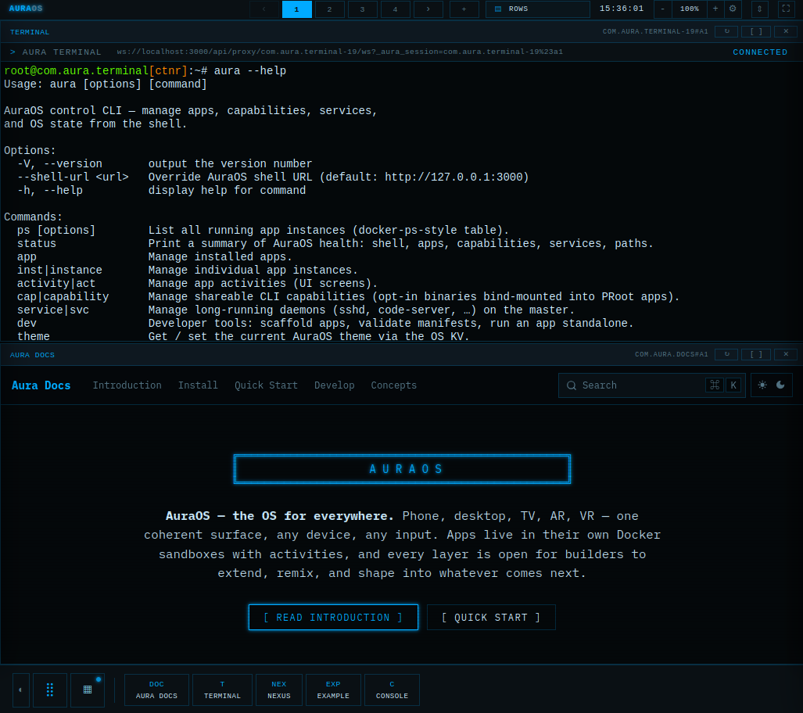

The WebOS for humans and their agents.
Created with agents, curated by humans.
A self-hosted WebOS where people and AI agents work side by side. Every tool and agent runs sandboxed in its own container, installs like an app, and composes like Lego — visible in one transparent control plane.
One container. Every tool. Fully yours.

The desktop — every window is an app in its own sandbox.
$ git clone https://github.com/lacky95/auraos.git $ cd auraos $ docker compose up # then open http://localhost:3000
Docker is the only dependency. The desktop comes up in seconds after the first build —
press Ctrl+Alt+Space for the launcher.
Full guide in the Quick Start docs;
the complete documentation is at docs.aura.lakner.io,
and ships inside the OS as the Docs app.
Pre-alpha — dev mode by default, no auth or TLS yet. Don’t expose it to a public network.
Every app gets its own container and sees only its own slice of the filesystem — sibling apps are invisible, and it holds only the tools you granted it.
aura cap grant com.example.foo docker
Install, update and publish apps from Git, an OCI registry, a curated index or a local path — into system, global or user scope, each non-system scope its own git repo.
aura nexus install com.example.foo · browse the store ↗
The same aura command runs on your host and inside every sandbox. Scaffold an app, jump into a running one, or mount another app’s files into it — live, no restart.
aura dev new · aura jump · aura mount
LiteLLM, a vector DB, an agent — a thin adapter turns any image into an app against one SDK. Upstream stays untouched, so upgrades are still docker pull.
Host tools installed once, then granted per app — an app only ever sees what you handed it. Your AI coding agent is just another capability.
aura cap install claude
Working references for every pattern in the OS — PTY over WebSocket, multi-activity state, content providers, themes. All readable source.
Upstream images running unchanged behind a thin adapter. Autonomous agents are the next ones in — the OS is built to be their sandbox.
◇ amber · not yet shipped